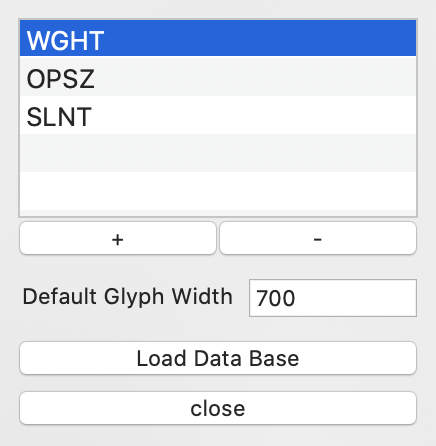
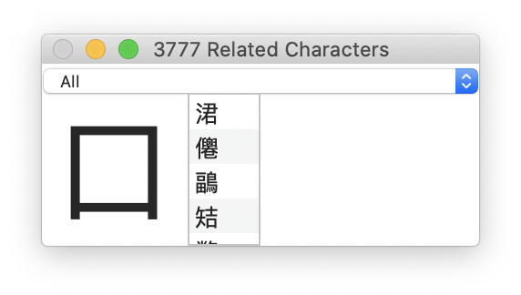
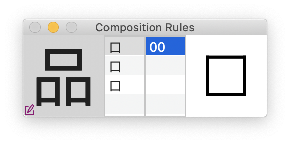

RoboCJK is a git based collaborativ tool to develop CJK typefaces.
The tool will commit / push / pull automatically.
First step you have to open the terminal and type the next command:
The terminal will ask your git username and password.
Then the roboCJK is ready to use.
Load a git Repository.
A window will ask your git's username/password and your git's hostlocker. If you are the owner of the git host, you can add the git host password to let RoboCJK create the lockers repositories. Then click on «New project »
Save the project in your repo.
It will appear on the pop up button with .rcjk extension ( myProject.rcjk )
You can have as many as you want .rcjk project in the same repository.

The font infos button will open a sheet above the main window
• You can create the axis of the final variable font
• Put a default glyph width
Find out our own free database on our GitHub BlackFoundryCom / HanGlyphComposition
Click on the button ‘new AE’ to create a new atomic element. Rename it as you want.
Double click on the item, it will open a glyph window.
An atomic element is only made of outlines.
To have a variability of it, you have to draw the variants in different layers of the glyph To link the layers between them, click on ‘+’. A sheet will open above the glyph window. Select the layer you want, name it and add it. Then an item will appear on the glyph window’s bottom left with the name of the layer and a slider. By moving the slider, you will see the result of the interpolation between the foreground and layers. You can link as many layer as you want. Be careful, all outlines in layers have to be interpolatable with the foreground.
Your atomic element is ready!
Click on the button ‘new DC’ to create a new deep component. Rename it as you want.
Double click on the item, it will open a glyph window.
A deep component can be made only of atomic elements, no outline are allowed.
To add an atomic element, right click -> add atomic element.
A sheet will open above the glyph window. Select the atomic element you want, add it.
The atomic element will appear in green color. (Green means master axis on deep component) By clicking inside an atomic element, the atomic element will be selected (color will change to turquoise color). All its axis will appear in the bottom left list (Atomic element’s Axis section). Drag their slider to modify the selected instance.
The atomic element instance can receive three kind of additional transformation, such as:
In the Deep component’s Axis section, by clicking on ‘+’ button you will add a new Axis on your deep component. You cans rename it, and add as many axis as you want. An item will appear and it will automatically copy the master in your axis. The color will become light orange. Double click in any axis item to go in. Then hit space bar to go back on the master (the color will go back to green) Then add the transformation you want on atomic elements in this deep component axis.
Your deep component is ready!

This Floating Window appear automatically while opening a deep component window, if there is a loaded database. The aim is to display all the related character glyph. And If they have been drawn in outline, to display the character above the deep component to test the extrems
Double click on a character and, if it do not already exist in the font will create it, and open it.
By clicking on ‘new DC’ a sheet will open, with different option of creation.
On the first section « custom », you can type all characters or glyphs names (separate with space) you want to add. If there is a database loaded you can create in the same time the deep components they need (by keeping active the bottom left check box)
On the second section « Related to deep components » will work only if a database is loaded. On the left a list display all the deep components existing in the current font. By selecting items, it will display on the right all the characters you can entirely draw. Then add it. Or by clicking on the Bottom button « Add all possible characters » it will add all the characters you can entirely do with your current set of deep components.
A character glyph can be made only of deep components, no outline are allowed.
To add a deep component, right click -> add deep component.
A sheet will open above the glyph window. Select the deep component you want, add it.
The deep component will appear in purple color. (Purple means master axis on character glyph) By clicking inside a deep component, the deep component will be selected (color will change to turquoise color). All its axis will appear in the bottom left list (Deep Component’s Axis section). Drag their slider to modify the selected instance.
The deep component instance can receive three kind of additional transformation, such as:
In the Font Variation’s Axis section, by clicking on ‘+’ button you will add a new Axis on your character glyph. A sheet will open above the glyph window, to choose an axis already existing in the font infos.
An item will appear and it will automatically copy the master in your axis. The color will become light red. Double click in any axis item to go in. Then hit space bar to go back on the master (the color will go back to purple) Then add the transformation you want on deep components in this character glyph axis.
Your character glyph is ready!

This Floating Window appear automatically while opening a character glyph window, if there is a loaded database. The aim is to display the composition of the character glyph. The firts column show the structure and the second column show the version existing in font of each deep component.
Double click on a version and it import the deep component.
By clicking on the bottom left button, you can edit the database.
To import a deep component instance from a specific character glyph, click right -> Import Deep Component from another Character Glyph.
A window will open, type the glyph name or the character. Its deep components will appear on the left list.
By double clicking on an item, it will import the deep component with its settings.
Each elements can receive three kind of transformation, such as:
There is three way to do a transformation:
Find out our free additional tools on our github